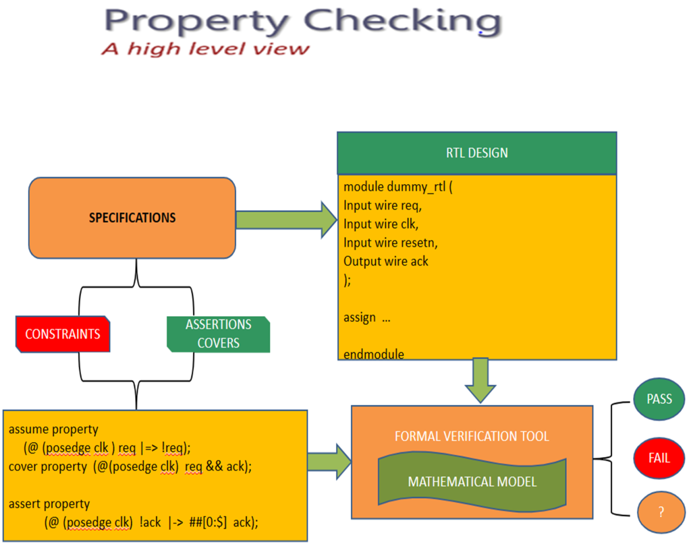
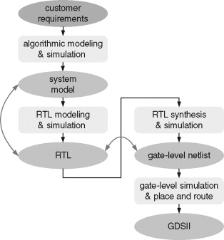
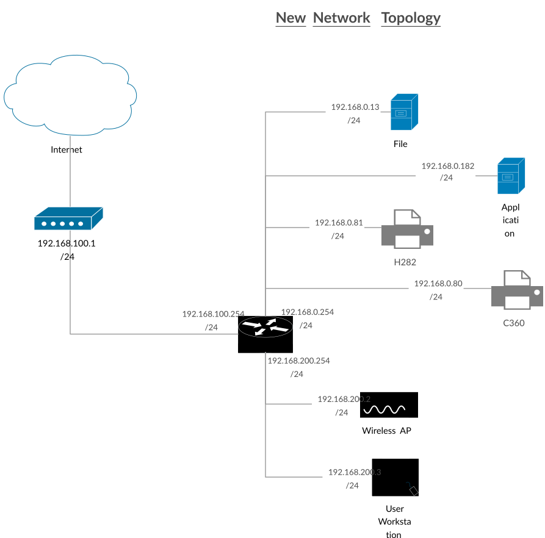
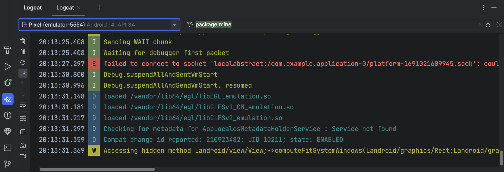

JASPERGOLD
VISUALS
VERIFICATION ECOSYSTEM
FPV
Functional Logic
Connectivity
SoC Wiring
CDC / RDC
Clock Domains
Signoff
Final Coverage
Synth
Auto SVA
Low Power
UPF Checks
Security
Leak Analysis
SLEC
Equivalence
PROJECT DETAILS
Project Resources

Problem Statement
Traditional simulation-based verification often misses deep corner-case bugs in complex SoC designs. Our goal was to implement JasperGold Formal Verification to prove functional correctness exhaustively, reducing verification time by 40% and ensuring 100% bug detection in the FPV unit.
Functional Property Verification (FPV)
JasperGold FPV is the industry's highest-capacity formal solver. It allows engineers to prove SystemVerilog Assertions (SVA) across all design states, ensuring that bugs are caught mathematically rather than through random testing.
property req_gnt_check;
@(posedge clk) req |-> ##[1:4] gnt;
endproperty
assert_check: assert property(req_gnt_check);

Formal Workflow

Proof Results
Connectivity Verification
How it Works
JasperGold Connectivity Verification uses formal algorithms to structurally and functionally prove that signals are correctly routed across the SoC. Instead of running millions of simulation cycles to toggle a path, it mathematically confirms the connection from 'Point A' to 'Point B' instantly.
Where We Use It
It is primarily used in SoC Integration to verify:
- Top-level pad-ring to core logic wiring.
- Bus fabric connections (APB/AHB/AXI).
- Register file to peripheral port mapping.
- Ensuring DFT (Design for Test) structures are correctly hooked up.
Advantages
- Exhaustive: Checks 100% of pins.
- Fast: Setup takes minutes, not weeks.
- Automatic: Detects floating pins & inversions.
Disadvantages
- Limited to wiring (not complex logic).
- Requires clean UPF for power-aware checks.
check_conn -from {TOP.cpu_inst.addr_out} -to {TOP.mem_inst.addr_in} -expected 1

Structural Wiring Map

Inversion & Open Pin Detection
CDC / RDC Verification
How it Works
JasperGold CDC formally analyzes all signals crossing between different clock domains. It identifies structural issues like missing synchronizers and then uses formal engines to prove that data transfer protocols (like Handshaking or Gray coding) are robust against metastability.
Where We Use It
Essential for high-speed SoC designs involving multiple asynchronous clocks, such as:
- Interfacing between a slow Peripheral Bus (APB) and a fast Processor Clock.
- Verifying Reset Domain Crossings (RDC) to prevent glitches during power-up.
- Asynchronous FIFO controllers in networking hardware.
Advantages
- Finds Metastability bugs simulation misses.
- Structural and Functional Proofs.
- Handles complex Reset sequences.
Disadvantages
- Requires strict SDC (Constraints) setup.
- High complexity in large designs.
cdc_check -type synchronizer -from clk_a -to clk_b
// Result: Proved Metastability-free

2-FF Synchronizer Analysis

Formal Path Tracing View
Formal Signoff & Coverage
How it Works
Formal Signoff uses "Unreachability Analysis" to prove that certain parts of the RTL code can never be triggered, regardless of the input. It complements simulation by identifying "dead code" and ensuring that every assertion has been mathematically proven (Full Proof) rather than just "not failing yet."
Where We Use It
Crucial for the final stages of the design cycle before tape-out:
- Coverage Hole Analysis: Finding why certain coverage points aren't hit in simulation.
- Proof Core: Identifying the minimum set of logic required to prove a property.
- Safe-to-Remove Code: Identifying redundant logic to save area and power.
Advantages
- Provides 100% Confidence for Tape-out.
- Eliminates unreachable "Dead Code".
- Reduces simulation time by focused testing.
Disadvantages
- "Over-constrained" designs can give false passes.
- Requires high computational memory for large SoCs.
report_coverage -summary -formal
// Status: 100% Bound Proven | 0 Unreachable Blocks

Signoff Progress Tracker

Unreachability Analysis View
Property Synthesis (Synth)
How it Works
JasperGold Property Synthesis automatically generates SystemVerilog Assertions (SVA) by analyzing the RTL behavior. It "observes" the design intent and creates a set of properties that describe how the hardware is supposed to behave. This is often called "mining" for properties.
Where We Use It
This is a lifesaver for working with existing designs and rapid prototyping:
- Legacy Code: Adding verification to old RTL that lacks documentation.
- Assertion Jumpstart: Generating a baseline of SVAs that engineers can later refine.
- Protocol Extraction: Understanding complex bus behaviors by seeing generated rules.
Advantages
- Massive time saver in testbench creation.
- Uncovers hidden design behaviors.
- Creates portable SVAs for other tools.
Disadvantages
- May generate "noise" (too many simple properties).
- Requires manual review to ensure intent is correct.
// Generated by JasperGold Synth
property auto_ack_check;
@(posedge clk) (state == IDLE && req) |-> ##1 (state == BUSY);
endproperty

RTL to SVA Extraction Flow

Generated Assertion Dashboard
Low Power (UPF) Verification
How it Works
JasperGold LP uses formal analysis to verify designs with multiple power domains. It reads the RTL along with the UPF (Unified Power Format) file to ensure that isolation cells, level shifters, and retention registers are correctly implemented. It proves that a "powered-down" block cannot send "X" (unknown) values to an active block.
Where We Use It
Essential for mobile and battery-operated devices (SoC design):
- Power Shut-off (PSO): Verifying blocks that turn off completely to save leakage.
- Multi-Voltage Rails: Ensuring level shifters correctly translate signals between 0.8V and 1.2V domains.
- Retention Logic: Checking if data is saved correctly before a domain powers down.
Advantages
- Exhaustive check of Power-Up/Down sequences.
- Finds "X-propagation" issues in structural logic.
- Reduces reliance on power-aware gate-level sims.
Disadvantages
- Highly dependent on the quality of the UPF file.
- Complex state-space when many power domains overlap.
verify_lp -upf top.upf -design top_rtl
// Result: Isolation Cell at Path {TOP.core_to_io} Proved Correct

Isolation Cell Verification

SoC Power Domain Map
Security Path Verification
How it Works
JasperGold SEC uses Formal Taint Analysis to track the flow of sensitive information. It labels specific data (like an encryption key) as "tainted" and mathematically proves that there is no possible sequence of cycles that allows this data to reach a non-secure output port. It ensures that hardware "firewalls" are truly unbreachable.
Where We Use It
Critical for chips handling private user data, such as Mobile SoCs and Automotive ICs:
- Root of Trust (RoT): Protecting the boot sequence and master keys.
- Side-Channel Prevention: Ensuring timing differences don't leak secret info.
- Secure Enclaves: Verifying the isolation between Secure and Non-Secure worlds (e.g., ARM TrustZone).
Advantages
- Exhaustive: Proves 100% data isolation.
- Finds architectural "backdoors" in logic.
- Automates complex Taint Analysis.
Disadvantages
- Difficult to define all "Taint" sources.
- Formal state-space grows with complex logic.
sec_check -taint {TOP.security_module.key_reg} -to {TOP.uart_tx_out}
// Result: PROVED - No Information Leak Detected

Taint Propagation Map

Secure/Non-Secure Isolation View
Sequential Logic Equivalence (SLEC)
How it Works
Unlike standard equivalence checking (LEC) which only looks at combinational logic, SLEC proves that two designs are functionally identical across multiple clock cycles. It compares a "Golden" model (like C++/SystemC or an older RTL) against a "Revised" model (optimized RTL) to ensure their outputs match for every possible input sequence.
Where We Use It
SLEC is the ultimate tool for verifying architectural changes and optimizations:
- C-to-RTL Verification: Proving that a hardware implementation matches its high-level algorithm.
- ECO Verification: Ensuring that "Engineering Change Orders" only fixed the intended bug without breaking anything else.
- Hardware Accelerators: Verifying complex math units or DSP blocks against a reference model.
Advantages
- Eliminates the need for massive "Golden" testbenches.
- Finds sequential bugs that LEC cannot detect.
- Supports cross-language comparison (C++ vs. Verilog).
Disadvantages
- State-space explosion on very deep pipelines.
- Requires careful alignment of input/output boundaries.
compare_designs -golden {REF_MODEL} -revised {OPT_RTL}
// Result: PROVED - Designs are Functionally Equivalent

Golden vs. Revised Model Comparison

Sequential Pipeline Alignment View